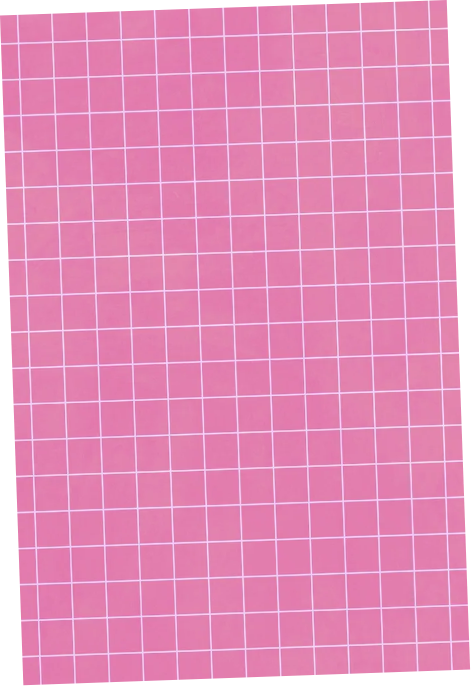
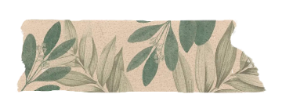

This page is a collection of my multimedia projects. This includes projects that used programs such as Illustrator and Blender, and utilized machines such as a vinyl cutter, a laser cutter, and 3D printers!
Multimedia



Vinyl Intervention Project
My project for my Art 284 class, Expanded Media 1, where I was assigned to use a vinyl cutter to create an art installation utilizing the environment around it. I used this faint blue rectangle on the side of a building as a base for a couch for cats to sit on. It is also near another student's installation of a mouse sleeping in a bed...I like to think that my cats and the mouse are neighbors.


Organic Wood Project
Another project from Expanded Media 1, where I was assigned to make an organic form utilizing pieces of cut wood. This was done by creating paths in Adobe Illustrator to be sent to a laser cutter and assembling the pieces using wood glue.


Wooden Structure Project
Another project from Expanded Media 1, where I was assigned to make a functional wooden structure made to hold something. I chose to make a small display stand for my rock frogs that resembled a lily pad, with some creative liberties. This was done by creating paths on Adobe Illustrator that were sent to a laser cutter. I then stained the wood green and assembled them together using wood glue.
Developed & Designed by Kaitlyn Montano